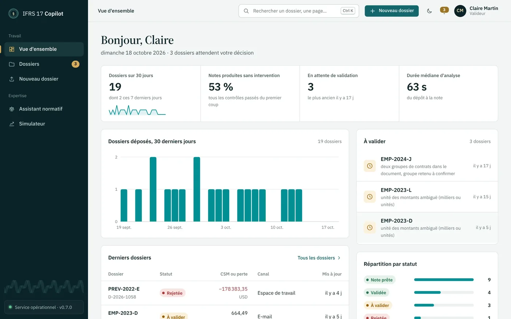

Un modèle de langage peut-il rédiger une note IFRS 17 sans inventer un chiffre ?
IFRS 17 Copilot
Un copilote multi-agent lit un dossier d’assurance (PDF, scan, Excel ou question vocale), calcule la marge sur services contractuels et le passif pour sinistres survenus, puis rédige une note citée, vérifiée et soumise à validation humaine. Le code calcule, le modèle explique.
- Double calcul contre un script R
- 50 / 50 dossiers au centime
- Recherche dans la norme
- Recall@5 de 0,52 à 0,75
- Tests automatisés
- 370+, CI verte
Python, FastAPI, LangGraph, RAG, Qdrant, n8n